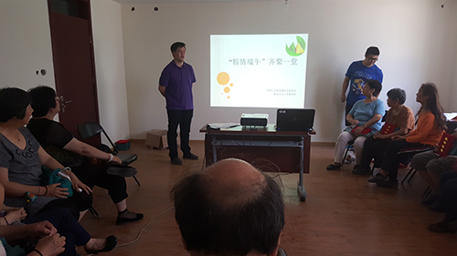

当前位置：首页 > 信息公告 > 详情
“粽情端午”齐聚一堂
2016-06-08 来源：人民网

端午节是中华民族的传统节日。在端午节来临之际，育德社区邀请辖区共建单位代表及社区居民，于6月7日下午在育德社区活动室，一起通过互动游戏的形式，让大家在了解端午节文化的同时，共同度过了一个欢乐而又有意义的端午节。
活动共分为4个环节。首先环节，是“五彩祝福”。五彩线，顾名思义由红、黄、黑（蓝）、绿、白等五个颜色组成。古代也叫五彩长命缕。是大家祈求平安的一种方式，系五彩线也就成为端午节不可缺少的习俗之一。借由五彩线，我们为前来参加活动的居民及代表送上了平安的祝福。第二个环节是“海盗船长”。规则是：通过随机指定人员来喊出“海、盗、船、长”这四个字，念“长”字的同时做规定动作。大家通过这个小游戏感受到了端午划龙舟的热闹氛围。第三个环节是“沙画视频”。在上个游戏的热闹气氛下，大家通过观看端午节沙画，一起了解端午节的由来，一起讨论学习了端午节的习俗。最后的环节是“脑洞大开”。以端午节有关谜语大家来猜的互动形式，结束了本次活动。
在活动结束以后，社区的志愿者与共建单位代表一起走访慰问了辖区内80岁以上的独居老人，为老人们送去了粽子及节日的祝福，共同促进社区和谐发展。